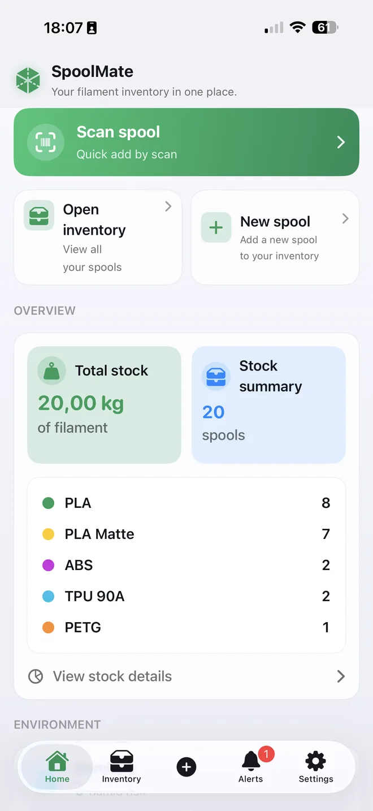
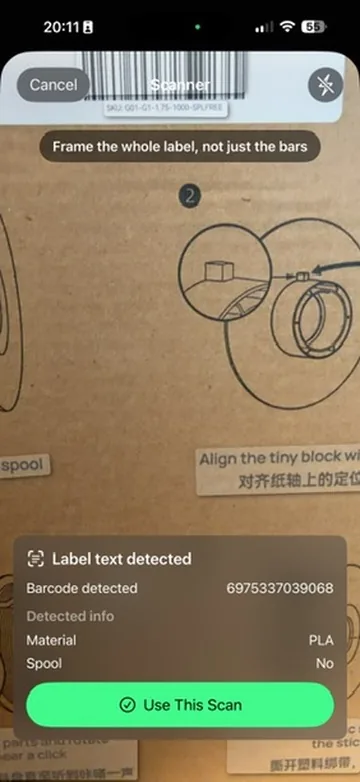
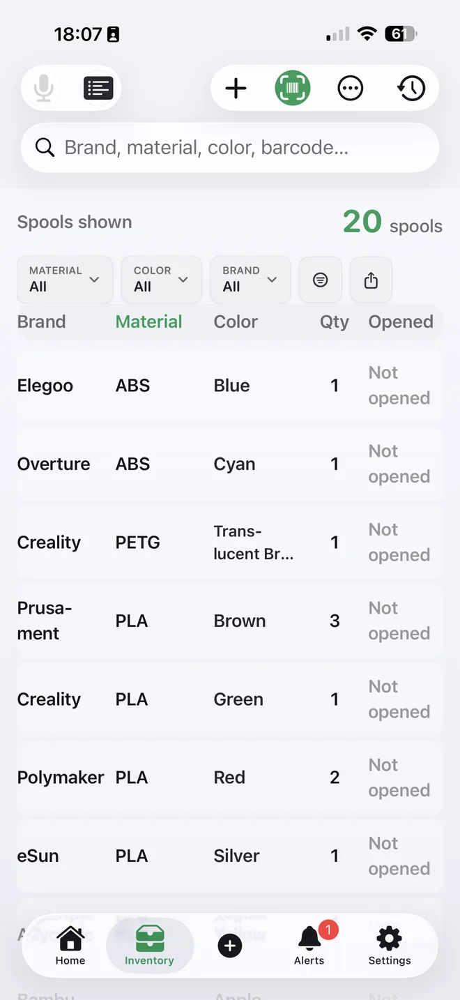
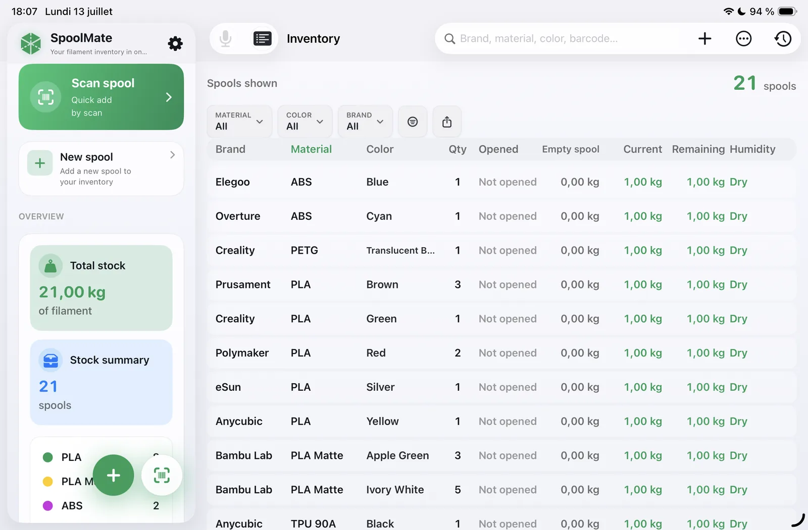

Find the right spool
Search and filter by brand, material, color, status or remaining weight.
Filament inventory for iPhone & iPad
Track every spool by brand, material, color and remaining weight. Find the right filament before your next print.

The essentials
Everything important is close at hand, without turning inventory into a chore.
Search and filter by brand, material, color, status or remaining weight.
Known barcodes prefill saved details. Review and save a new barcode once, and Spool Mate learns it for next time.
Record current weight and see how much filament is still available.
Spool Mate Pro
Point your camera at a spool label. If the barcode is already in your catalog, Spool Mate prefills the saved brand, material, color and weight. If it is new, review or complete the details once and save the spool; Spool Mate then learns the barcode and recognizes it automatically the next time.

Built for every screen
Use a focused list on the go or a detailed table when you have more room.
Quick search and filters keep the right spool within reach.

Dashboard and inventory sit side by side without stretching or distortion.

Simple by design
Enter a spool manually or scan its label with Spool Mate Pro.
Locate the right brand, material or color in seconds.
Update quantities and remaining weight after each print.
Spool Mate is local-first. iCloud synchronization is optional, and your inventory can be exported whenever you want.
Spool Mate Pro
Start with up to 10 spools, then unlock unlimited inventory and barcode scanning with one purchase.